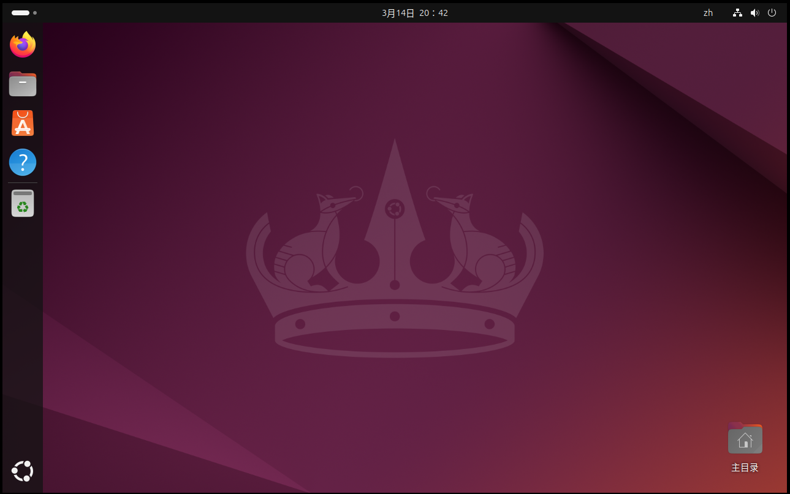

实验一：Linux基础与系统调用——初探Linux与环境配置(part 1)
实验目的
- 学习如何在虚拟机中使用Linux；
- 学习Linux (Ubuntu) 的使用方法；
- 学习并熟练使用若干Linux指令；
实验环境
- 虚拟机：VMware
- 操作系统：Ubuntu 24.04.2 LTS
- Linux内核版本: 6.11.0
系统的安装形式可以自由选择，双系统，虚拟机都可以，系统版本则推荐使用本文档所用版本。注意：由于Linux各种发行版非常庞杂且存在较大差异，因此本试验在其他Linux发行版可能会存在兼容性问题。如果想使用其他环境（如vlab）或系统（如Arch、WSL等），请根据自己的系统自行调整实验步骤以及具体指令，达成实验目标即可，但其中出现的兼容性问题助教无法保证能够一定解决。
实验时间安排
注：此处为实验发布时的安排计划，请以课程主页和课程群内最新公告为准
- 3.28 晚实验课，讲解实验第一部分、第二部分，检查实验
- 4.4 清明节放假
- 4.11 晚实验课，讲解实验第三部分，检查实验
- 4.18 晚实验课，检查实验
- 4.25 晚及之后实验课，补检查实验
补检查分数照常给分，但会记录此次检查未按时完成，此记录在最后综合分数时作为一种参考（即：最终分数可能会低于当前分数）。
检查时间、地点：周五晚18: 30~22: 00，电三楼406/408。
如何提问
- 请同学们先阅读《提问的智慧》。原文链接
- 提问前，请先阅读报错信息、查询在线文档，或百度。在线文档链接；
- 在向助教提问时，请详细描述问题，并提供相关指令及相关问题的报错截图；
- 在QQ群内提问时，如遇到长时未收到回复的情况，可能是由于消息太多可能会被刷掉，因此建议在在线文档上提问；
- 如果助教的回复成功地帮你解决了问题，请回复“问题已解决”，并将问题及解答更新到在线文档。这有助于他人解决同样的问题。
为什么要做这个实验
- 为什么要学会使用Linux？
- Linux的安全性、稳定性更好，性能也更好，配置也更灵活方便，所以常用于服务器和开发环境。实验室和公司的服务器一般也都用Linux；
- Linux是开源系统，代码修改方便，很多学术成果都基于Linux完成；
- Windows是闭源系统，代码无法修改，无法进行后续实验。
- 为什么要使用虚拟机？
- 虚拟机对你的电脑影响最低。双系统若配置不正确，可能导致无法进入Windows，而虚拟机自带的快照功能也可以解决部分误操作带来的问题。
- 本实验并不禁止其他环境的使用，但考虑其他环境（如WSL）变数太大，比如可能存在兼容性或者其他配置问题，会耽误同学们大量时间浪费在实验内容以外的琐事，因此建议各位同学尽量保持与本试验一致或类似的环境。
- 为什么要学会编译Linux内核？
- 这是后续实验的基础。在后续实验中，我们会让大家通过阅读Linux源码、修改Linux源码、编写模块等方式理解一个真实的操作系统是怎么工作的。
其他友情提示
- 合理安排时间，强烈不建议在ddl前赶实验。
- 本课程的实验实践性很强，请各位大胆尝试，适当变通，能完成实验任务即可。
- pdf上文本的复制有时候会丢失或者增加不必要的空格，有时候还会增加不必要的回车，有些指令一行写不下分成两行了，一些同学就漏了第二行。如果出了bug，建议各位先仔细确认自己输入的指令是否正确。要逐字符比对。每次输完指令之后，请观察一下指令的输出，检查一下这个输出是不是报错。请在复制文档上的指令之前先理解一下指令的含义。 我们在检查实验时会抽查提问指令的含义。
- 如果你想问“为什么PDF的复制容易出现问题”，请参考此文章。
- 如果同学们遇到了问题，请先查询在线文档。在线文档地址：链接
章节一：在虚拟机下安装Linux系统
提示：
- 本部分属于初学者指南。我们不限制环境的使用。你可以使用双系统或其他linux发行版完成实验。虽然理论上影响不大，但若其他版本的操作系统在后续实验中出现兼容性问题，可能需要你自己解决。
- 本课程推荐使用VMware来完成实验。你也可以使用其他虚拟机软件（比如VirtualBox）。但是不建议使用其他虚拟化产品，如WSL、容器、vlab等。这些虚拟化产品在实验的各个阶段容易出现问题，不建议使用。
1.0 若干名词解释
宿主机(host)：主机，即物理机器。
虚拟机：在主机操作系统上运行的一个“子机器”。
Linux发行版：Linux内核与应用软件打包构成的可以使用的操作系统套装。常见的有Ubuntu、Arch、CentOS甚至Android等。
1.1 下载
虚拟机软件：
- VMware Workstation Pro的下载链接（请参考1.2的步骤下载）：https://support.broadcom.com/group/ecx/productdownloads?subfamily=VMware%20Workstation%20Pro&freeDownloads=true
- macOS宿主机若想使用其他虚拟机软件，请自行搜索安装教程。
Ubuntu 24.04.2 LTS 安装镜像文件（下载完成之后，你不需要打开镜像文件）：
- 官网链接：https://releases.ubuntu.com/noble/ubuntu-24.04.2-desktop-amd64.iso
- LUG校内镜像，校内下载速度可达几十MB/s：http://mirrors.ustc.edu.cn/ubuntu-releases/24.04.2/ubuntu-24.04.2-desktop-amd64.iso
1.2 VMware Workstation Pro下载
- 访问BROADCOM官网，在右上角注册账号并登录。

- 访问https://support.broadcom.com/group/ecx/productdownloads?subfamily=VMware%20Workstation%20Pro&freeDownloads=true，展开
VMware Workstation Pro 17.0 for Windows，点击最新版本。

- 勾选
I agree to the Terms and Conditions，点击下载图标下载。

- 正常应该是直接开始下载，如果弹出如下界面，补全相关信息，点击提交，再按照第三步操作一遍即可。

安装VMware的步骤较为简单，运行安装程序即可，在此不表。
1.3 创建、安装虚拟机 (VMware)
1.3.1 新建虚拟机
左上角菜单栏单击文件，点击新建虚拟机。

在打开的窗口选择典型（推荐），点击下一步 。

选择稍后安装操作系统，点击下一步。
请不要在这里选择安装程序光盘镜像文件，我们会在稍后再选择。
此处选择会触发自动安装，后续实验可能会出现问题。

客户机操作系统选择Linux，版本选择Ubuntu 64 位。

1.3.2 设置虚拟机名称和文件存放位置
设置虚拟机名称和文件存放位置。
考虑到虚拟磁盘大小可能需要50GB以上，建议将其放在空间有富余的磁盘分区上。

1.3.3 设置虚拟硬盘
最大磁盘大小：建议40G~50G。你可以随意选择是否拆分磁盘的选项。如果你有很多不常用的文件占用大量磁盘空间，可以考虑将其转移到睿客云盘上保存。（注意：虚拟机硬盘空间并不是预先全部分配，而是分配实际使用到的部分，所以设置略大不影响实际磁盘使用）
警告：如果磁盘空间不够，Linux启动会黑屏进不去图形界面，需要在命令模式下删除一些文件后重启才能进入图形界面。一些虚拟机具备“扩展磁盘容量”的功能，但是根据实际测试，发现很多时候反而会让虚拟机直接黑屏。

1.3.4 硬件配置
可以在自定义硬件内自己设置内存、处理器核数等设置。完成设置以后点击完成。
请至少分配2GB以上的内存给虚拟机。同时建议分配至少1/4主机内存给虚拟机。
为虚拟机分配更多的CPU内核数量有助于提高虚拟机的性能。注意，给虚拟机分配的内核不是被虚拟机独占的。就算为虚拟机分配宿主机相同的内核数量，也毫无问题。


1.3.5 选择操作系统镜像
右键点击左侧侧边栏中我们创建的虚拟机，然后点击设置。

在设置界面，点击CD/DVD(SATA)，在右侧，选择使用ISO映像文件，点击浏览，选择我们之前下载的Ubuntu 24.04.2的镜像文件，点击确定保存设置。

在我们创建的虚拟机的选项卡中，点击开启此虚拟机，启动虚拟机，准备安装Ubuntu。

1.3.6 安装Ubuntu
如果在安装时发现“继续”、“后退”、“退出”等按钮在屏幕外，请先按
Alt+F7，然后松开键盘，再移动鼠标以拖动窗口。点击鼠标会使窗口拖动停止。
安装的大部分步骤只要默认下一步即可，我们只对关键步骤进行提示。
虚拟机启动以后会弹出如下界面，选择Try or Install Ubuntu，按回车键选择。

接下来将进入Ubuntu安装程序，选择语言为中文（简体）：

键盘布局选择汉语：

在更新可用界面，不建议选现在更新。因为国内默认的下载源速度较慢，换源之后速度才快。此处点击跳过，稍后我们进入系统换源以后再更新。

安装类型界面，因为虚拟机的磁盘本来就是空的，所以安装类型选择擦除磁盘并安装Ubuntu。
警告：在安装双系统时，不要选这个，否则后果自负。

设置账户界面，随便编一个姓名、计算机名、用户名，然后设置密码。
警告：请一定要记住密码。否则会进不去系统。

时去选择界面，时区位置默认上海即可。

最后等待安装完成即可，安装完成之后系统会提示重启，按照提示重启即可。

重启可能会遇到如下情况，提示需要移除安装光盘。

按照1.3.5章节，打开虚拟机设置界面，将启动时连接取消勾选，再点击确定保存。然后回到虚拟机界面，点击回车键，即可正常进入系统。

1.4 其他必要设置
1.4.1 换源
Ubuntu自带的软件源较慢，这会导致我们安装软件包时花更多的时间下载。所以要更换软件源为科大镜像。进入虚拟机后，点击左下角的进入应用菜单，找到并进入“软件更新器”。进入之后它会检查更新，最后会跳出一个“是否向安装更新”的提示。不要安装，并点击“设置”。

更改“Ubuntu”软件选项卡的“下载自”为“其他站点”，在弹出的“选择下载服务器”窗口中选择“中国-mirrors.ustc.edu.cn”。输入密码即可完成修改。

设置之后，如果提示更新软件包缓存，请选择更新，并等待更新结束再安装其他软件包/语言包。如果提示更新系统，也可以放心地选择更新而不必担心用时过长。
1.4.2 设置文件拖放
VMware默认可以进行主机与虚拟机之间的文件拖放，因为VMware会自动安装VMware tools，但是如果发现调整不了虚拟机分辨率、无法共享粘贴板等情况，是自动安装失败（比如网络问题），需要手动安装。请参考此链接：https://blog.csdn.net/williamcsj/article/details/121019391或者官方文档：https://techdocs.broadcom.com/cn/zh-cn/vmware-cis/vsphere/tools/12-1-0/vmware-tools-administration-12-1-0/installing-vmware-tools/manually-install-vmware-tools-on-windows.html
VMware的文件拖放经常会出问题，目前并没有通用的解决方案，因此建议用U盘、共享文件夹、睿客云盘之类实现文件中转。
1.4.3 修改语言
如果按照本文档进行手动安装，一般无需修改。如果你采用了自动安装或者有一些意外情况，请参考此链接：https://blog.csdn.net/ibiao/article/details/127715465
1.4.4 如何关机
如何关闭Ubuntu：如下图所示，点屏幕右上角-关机。

直接点虚拟机右上角的叉也可以关机。
章节二：初探Linux
考虑到很多同学在本次实验之前没有使用过Linux系统，因此提供此部分来速成Linux。
2.1 Ubuntu GUI的使用
打开虚拟机进入到Ubuntu之后，即可看到Ubuntu的GUI界面。默认左侧是Dock（类似Windows的任务栏），里面有若干内置软件。左下角是菜单（类似Windows的开始菜单）。考虑到部分同学首次接触Ubuntu，因此建议各位依次点击所有的软件、按钮，以进一步了解Ubuntu并熟悉其中的软件。
屏幕最右上角有几个图标，可以调整音量、网络设置、语言、输入法等，还可以关机。在菜单里找到“设置”，里面可以调整系统设置，如分辨率、壁纸等。Dock里有一个文件夹形状的图标，它是文件管理器，可以像windows一样图形化地浏览文件。
提示：如果在执行某个操作时报错文件/文件夹不存在，可以在UI界面内手动复制粘贴文件到目标位置（文件所有者为root用户的除外）。

2.2 终端（命令行）的使用
2.2.1 打开终端
在桌面/文件管理器的空白处右键即可出现“在终端打开”按钮，点击此处即可呼出终端进而在终端中执行相关的Linux指令。注意：终端也是有工作位置的。简单而言，在哪个目录下打开终端，命令就会在哪个目录下执行。终端当前目录一般称为“工作目录”。
举例：
ls指令可以显示工作目录下的文件。在不同的目录下运行此指令的结果显然是不一样的。
终端会显示工作目录，如图所示：

2.2.2 目录与路径
Linux与Windows不同，Windows一般会分有多个逻辑磁盘，每个逻辑磁盘各有一棵目录树，但Linux只有一个目录树，磁盘可以作为一棵子树挂载到目录树的某个节点。在Linux操作系统中，整个目录树的根节点被称为根目录。每个用户拥有一个主目录，或称家目录，类似windows的C:\Users\用户名。从根目录看，除root用户之外，每个用户的家目录为/home/用户名。
Linux终端里使用的路径分为绝对路径和相对路径两种。绝对路径指从根目录算起的路径，相对路径指从工作目录算起的路径。其中，以根目录算起的绝对路径以/开头，以家目录算起的绝对路径以~开头，相对路径不需要/或～开头。
举例：一个名为ustc的用户在他的家目录下创建了一个名为os的目录，在os目录下面又创建了一个名为lab1的目录，则该lab1目录可以表示为： *
/home/ustc/os/lab1*~/os/lab1* 如果工作目录在家目录：os/lab1* 如果工作目录在os目录：lab1
一些特殊的目录：
* .代表该目录自身。例：cd .代表原地跳转（cd是切换目录的指令）；
* ..代表该目录的父目录。特别地，根目录的父目录也是自身。
* 在Linux里，文件名以.开头的文件是隐藏文件（或目录），如何显示它们请参考2.3.3.
* .和..都是隐藏的目录。
举例：以下几个路径是等价的： *
/home/ustc/os/lab1*/home/ustc/os/././././././lab1*/home/ustc/os/../os/lab1
2.2.3 运行指令
在终端中输入可执行文件的路径即可。终端所在路径是程序运行时的路径。需要注意的是，如果运行的二进制文件就在工作目录下，需要在文件名前加上./。
提示：与windows可执行文件扩展名为.exe不同，Linux中，可执行文件一般没有扩展名。例外：gcc在不指定输出文件名的情况下，编译出的可执行文件会带有.out的扩展名。但你也不需要管这个.out，直接运行也是一样的。
例：有一个可执行文件，其路径为
~/os/lab1/testprog。它在运行时会读取一个相对路径为a.txt的文件。 * 在家目录下运行：需要执行os/lab1/testprog（或~/os/lab1/testprog等绝对路径），程序读取的a.txt在家目录下； * 在~/os/lab1下运行：需要执行./testprog(当然你用绝对路径也无所谓)，程序读取的a.txt在~/os/lab1目录下。
相关问题：为什么在运行sudo、man等命令时，只需要输入指令名而不需要输入这些指令对应的二进制文件所在的路径？
一种情况是，这是因为这些指令所在的路径（一般是/usr/bin）被加入到了该用户的环境变量中。当终端读取到一个不带路径的命令之后，系统只会在环境变量中搜索，从而方便用户使用。当然，默认被加入环境变量里的路径一般只有一些系统路径，除非自行设置，家目录下面没有目录默认在环境变量中。如感兴趣，修改环境变量的方法可自行搜索了解。
另一种情况是，部分指令是Shell内建指令（如cd），它们的意义直接由Shell解释，没有对应的二进制文件。此情况可能会在下一实验中详细阐述。
2.2.4 指令及其参数
无论是Linux还是Windows，一条完整的命令都由命令及其参数构成。你们可以通过man 指令名来自行了解指令语法。一般来说，指令语法里带有'[ ]'的是可选参数，其他是必选参数。不同的参数的顺序一般是可以互换的。下面以gcc（一种编译器）为例，介绍实验文档描述指令的方式，以及如何按需构造一条指令。
本次要用到的gcc指令的一部分语法是：gcc [-static] [-o outfile] infile 。下面是各参数介绍：
| 参数 | 含义 |
|---|---|
| -static | 静态编译选项（此处参数仅为示例，参数详细含义请自行上网搜索）。 |
| -o outfile | 指定输出的可执行文件的文件名为outfile。如果不指定，会输出为a.out。 |
| infile | 要编译的gcc文件名。注意绝对路径/相对路径的问题。 |
- 如果我们编译test.c，不指定输出文件名，命令就只是
gcc test.c；（这种情况下，gcc会自动命名输出文件为a.out） - 如果我们编译test.c，输出二进制文件名为test，命令就是
gcc -o test test.c； - 一般来说参数的顺序是无所谓的。所以使用
gcc test.c -o test也一样能编译。 - 如果我们编译test.c，输出二进制文件名为test，且要使用静态编译，那么构造出的编译指令就是
gcc -static -o test test.c。
2.2.5 终端使用小技巧
- 按键盘的
↑↓键可以切换到之前输入过的指令； - 按键盘的
Tab键可以自动补全。如果按一下Tab之后没反应，说明候选项太多。再按一下Tab可以显示所有候选项。 - 在shell里，
Ctrl+C是终止不是复制。复制的快捷键是Ctrl+Insert或Ctrl+Shift+C，粘贴的快捷键是Shift+Insert或Ctrl+Shift+V。
2.3 Linux常用指令
注：一些指令的使用方法详见提供的链接。本部分涉及测验考察，测验方式见文档3.2。
2.3.1 man
英文缩写：manual
如果你不知道一条命令的含义，使用man xxx可以显示该命令的使用手册。
举例：man ps 可以显示ps指令的使用方法。指令输出如下图。按q退出手册。

2.3.2 sudo
TL;DR：sudo = “以管理员模式运行”。A joke
Linux采用用户组的概念实现访问控制，其中，只有root用户组才具备管理系统的权限。在sudo出现之前，一般用户管理linux系统的方式是，先用su指令切换到root用户，然后在root用户下进行操作。但是使用su的缺点之一在于必须要先告知root用户的密码，且这种控制方式不够精细。
为了方便操作，并更加精确地控制权限，sudo用来将root用户的部分权限让渡给普通用户。普通用户只需要输入自己的密码，确认“我是我自己”，就能执行自己拥有的那部分管理员权限。特别地，在Ubuntu下，普通用户默认可以通过sudo取得root用户的所有权限。若想精确地控制每个用户能用sudo干什么，可以参阅visudo。
如果在输入某个指令后，系统提示权限不够(Permission Denied)，那么在指令前加上sudo一般都能解决问题。
注意1：root用户具备很高的权限。一些需要管理员权限才能执行的指令（如，删除整个磁盘上的内容）会破坏系统。所以在使用
sudo时，请务必确认输入的指令没问题。注意2：为了防止旁窥者获知密码长度，linux下输入密码不会在屏幕上给出诸如***的回显。输完密码敲回车就行了。
常见使用方法：sudo command
例：以普通用户运行apt install vim，会被告知没有权限，因为只有root用户（管理员）才有资格安装软件包。正确的用法是sudo apt install vim。
2.3.3 ls
英文全拼：list files
显示特定目录中的文件列表。常见的一部分语法是：ls [-a] [name] 。参数含义详见Linux ls命令。
2.3.4 cd
英文全拼：change directory
切换工作目录。常见的一部分语法是：cd [name] 。参数含义详见Linux cd命令。特别地，常见使用cd -来返回上次到达的目录。
2.3.5 pwd
英文全拼：print work directory
输出工作目录的绝对路径。常见的使用方法是：pwd 。
2.3.6 rm
英文全拼：remove
删除一个文件或目录。常见的一部分语法是：rm [-rf] name 。参数含义详见Linux rm命令。
2.3.7 mv
英文全拼：move
移动一个文件或目录，或重命名文件。常见的一部分语法是：mv source dest 。参数含义详见Linux mv命令。
2.3.8 cp
英文全拼：copy
复制一个文件或目录。常见的一部分语法是：cp [-r] source dest 。参数含义详见Linux cp命令。
2.3.9 mkdir
英文全拼：make directory
创建目录。常见的一部分语法是：mkdir [-p] dirName 。
参数含义详见Linux mkdir命令。
2.3.10 cat
英文全拼：concatenate
一般用于将文件内容输出到屏幕。常见的使用方法是：cat fileName 。
2.3.11 kill
用于将指定的信息发送给程序，通常使用此指令来结束进程。强制结束进程的信号编号是9，所以强制结束进程的使用方法是：kill -9 [进程编号]。
其他参数的使用方法可以参考Linux kill命令。
2.3.12 ps
英文全拼：process status
用于显示进程状态（任务管理器）。常见的使用方法：
ps: 显示当前用户在当前终端控制下的进程。考虑到用户通常想看不止当前用户和当前终端下的进程，所以不加参数的用法并不常用。ps aux: 展示所有用户所有进程的详细信息。注意，a前面带一个横线是严格意义上不正确的使用方法。ps -ef: 也是展示所有用户所有进程的详细信息。就输出结果而言和ps aux无甚差别。
2.3.13 wget
wget是一个在命令行下下载文件的工具。常见的使用方法是：wget [-O FILE] URL。
例如，我们要下载 https://git-scm.com/images/logo@2x.png 到本地。
{kind=link}
- 直接下载：
wget https://git-scm.com/images/logo@2x.png，文件名是logo@2x.png。 - 直接下载并重命名：
wget -O git.png https://git-scm.com/images/logo@2x.png，文件名是git.png。注：-O中的O表示字母O而不是数字0。
注意，如果发现有同名文件，1所示方法会在文件名后面加上.1的后缀进行区分，而2所示方法会直接覆盖。
2.3.14 tar
用于压缩、解压压缩包。常见使用方法：
- 把某名为source的文件或目录压缩成名为out.tar.gz的gzip格式压缩文件：
tar zcvf out.tar.gz source - 解压缩某名为abc.tar.gz的gzip格式压缩文件：
tar zxvf abc.tar.gz
其他使用方法详见Linux tar命令
2.3.15 包管理器（apt等）
在Linux下，如何安装软件包？每个Linux发行版都会自带一个包管理器，类似一个“软件管家”，专门下载免费软件。
不同Linux发行版附带的包管理器是不一样的。如，Debian用apt（Ubuntu是基于Debian的，所以也用apt），ArchLinux用Pacman，CentOS用yum，等等。
apt的常见用法：
- 安装xx包，yy包和zz包：
sudo apt install xx yy zz - 删除xx包，yy包和zz包：
sudo apt remove xx yy zz - 更新已安装的软件包：
sudo apt upgrade - 从软件源处检查系统中的软件包是否有更新：
sudo apt update
其他使用方法参见Linux apt命令。
其他提示：
- 如果报错
“无法获得锁 /var/lib/dpkg/lock.....”，这是因为系统在同一时刻只能运行一个apt，请耐心等另一边安装/更新完。Ubuntu的软件包管理器也是一个apt。若你确信没有别的apt在运行，可能是因为没安装完包就关掉了终端或apt。请重启Linux或参考此链接。- 如果报错
“下列软件包有未满足的依赖关系......”或没有可用的软件包.....，但是它被其他软件包引用了....，可能是因为刚换了源，没等包刷新完就关闭窗口，请手动sudo apt-get update。
2.3.16 文字编辑器（vim、gedit等）
Linux系统中，常见的使用命令行的文字编辑器是vim。系统一般并不自带vim，需要使用包管理器安装。由于vim的使用方法与我们习惯的的GUI编辑方式有很大差异，所以在这里不详细介绍它的用法。若想了解请参考https://www.runoob.com/linux/linux-vim.html。
gedit是Ubuntu使用的Gnome桌面环境自带的一款文本编辑器，其使用方法与Windows的记事本(Notepad)大同小异。在这里也不多介绍。在终端里输入gedit回车即可启动gedit。编辑特定的文件的使用方法是gedit 文件名，若输入的文件名不存在，将自动创建新文件。在Ubuntu的图形化界面中直接双击文本文件也可以编辑文件。但需要注意的是，在编辑一些需要root权限的文件时，直接双击文件不能编辑，只能在终端里sudo gedit 文件名。
在命令行下启动gedit会在终端里报warning，忽略即可。参考链接
如果想使用一些更高级的编辑器，可以考虑安装vscode。安装方法请自行到网上搜索。
比起在虚拟机内安装vscode，更推荐在主机上安装vscode并用ssh连接虚拟机，可以参考链接：https://blog.csdn.net/m0_73500130/article/details/139669691
如果想安装高级IDE的话（不推荐这么做），只能用CLion等。Visual Studio不支持Linux。
在后续的实验中，如果某步骤写着
vim xxx，说明这是让你编辑某文件。编辑文件的方式不仅局限于vim，用gedit等也可。
2.3.17 编译指令（gcc、g++、make等）
我们在编译代码时，需要使用编译器。gcc和g++是常见的编译命令。其中:
gcc会把.c文件当作C语言进行编译，把.cpp文件当作C++语言编译。g++会把.c和.cpp文件都当作C++语言编译。
考虑到复杂工程需要编译的文件数量会很多，此时每次都手输编译命令较为繁琐，为此GNU提供了一个make工具，可以按照一个编写好的Makefile文件来完成编译任务。我们将在实验一的第二部分给予重点介绍。
注意：
- 这里的“C语言”是C90标准的C语言，不能使用STL、类、引用、for内定义变量等C++特性。
- Linux内核是使用上面所述的C语言编写的，而不是C++。
- 在编写代码时，请注意代码文件的扩展名命名，和编译指令的选择。
gcc和g++默认是不安装的。如果你想使用，请先使用包管理器安装build-essential包，里面包括gcc、g++等常见编译器，和make工具等。
简单地使用gcc/g++编译的语法是：gcc [-o outfile] infile 。下面是指令的各个参数介绍。如需了解更详尽的使用方法，可参考gcc官方手册：http://www.gnu.org/software/gcc/。
| 参数 | 含义 |
|---|---|
| -o outfile | 指定输出的可执行文件的文件名为outfile。如果不指定，会输出为a.out。 |
| infile | 要编译的gcc文件名。注意绝对路径/相对路径的问题。 |
使用make的方法是：在工程目录下直接运行make即可。一些Makefile会提供多种编译选项，如删除编译好的二进制文件(make clean)、编译不同的文件等。这时候需要根据Makefile来确定不同的编译选项。
2.3.18 gdb调试指令
gdb是一款命令行下常用的调试工具，可以用来打断点、显示变量的内存地址，以及内存地址中的数据等。使用方法是gdb 可执行文件名，即可在gdb下调试某二进制文件。
gdb需要使用包管理器来安装。（参考2.3.15）
一般在使用gcc等编译器编译程序的时候，编译器不会把调试信息放进可执行文件里，进而导致gdb知道某段内存里有内容，但并不知道这些内容是变量a还是变量b。或者，gdb知道运行了若干机器指令，但不知道这些机器指令对应哪些C语言代码。所以，在使用gdb时需要在编译时加入-g选项，如：gcc -g -o test test.c来将调试信息加入可执行文件。而Linux内核采取了另一种方式：它把符号表独立成了另一个文件，在调试的时候载入符号表文件就可以达到相同的效果。
- gdb里的常用命令
r/run # 开始执行程序
b/break <location> # 在location处添加断点，location可以是代码行数或函数名
b/break <location> if <condition> # 在location处添加断点，仅当condition条件满足才中断运行
c/continue # 继续执行到下一个断点或程序结束
n/next # 运行下一行代码，如果遇到函数调用直接跳到调用结束
s/step # 运行下一行代码，如果遇到函数调用则进入函数内部逐行执行
ni/nexti # 类似next，运行下一行汇编代码（一行c代码可能对应多行汇编代码）
si/stepi # 类似step，运行下一行汇编代码
l/list # 显示当前行代码
p/print <expression> # 查看表达式expression的值
q # 退出gdb
2.4 参考资料
- Linux命令大全：https://www.runoob.com/linux/linux-command-manual.html
- Shell教程：https://www.runoob.com/linux/linux-shell.html
章节三： 检查要求
本部分无实验报告。
本部分实验共5分。
4.1 章节一检查要求
检查学生是否安装了Linux系统（不局限于Ubuntu）。本部分不计分。
4.2 章节二检查要求(5')
-
我们现场随便给出一条本实验文档未涉及的指令，你需要自己使用
man指令阅读其手册简要解释该指令的含义，并简要介绍任意一个参数的含义。本部分共1分。若遇到不认识的英文单词，可以现场搜索。 -
在助教的电脑上或机房的电脑上，在助教的监督下，使用实验提供的测试程序进行现场测试，每人最多尝试2次，取最高分。答题时不得打小抄、查阅实验文档。从题库中抽4题，每题抽4个选项，选项顺序会随机打乱。答题总时间120秒。每题1分。满分4分。为防止同一学生在不同助教处刷次数，每一次尝试都记录成绩。 题库见提供的csv文件，三个csv都是题库。csv文件里，第一列是题目，第二列是正确答案，其余是干扰项。公布的题库、自测程序和考察时使用的完全相同。csv文件是UTF-8 with BOM格式，可以直接用Excel打开。但Excel可能会将部分选项解释异常，因此建议使用文本编辑器打开。自测程序由Python语言编写，在Linux下，在自测程序目录下执行
python3 test.py即可运行测试程序。Ubuntu自带Python3。若未安装Python3，可用apt自行安装。强烈建议大家在检查之前自测几次，熟悉程序的工作流程。 为防止替考及背完就忘的情况，在后续实验中，如果发现有同学忘了指令含义，我们可能会考虑让其重做一遍测试题，并按照错误个数扣实验分。
因为往年很多同学实验做到最后还是对Linux指令很不熟悉，所以只能出此下策强迫大家进行记忆。
为保证本评测程序在多种操作系统下均可运行，秒数刷新时会覆盖掉已输入的数字。但这些数字确实是已经输入了的，只是被后续读秒的输出覆盖而不可见。所以，若确信输入正确，直接回车即可。若怀疑输入错误，请长按
Backspace保证之前输入的全被删掉之后再输入新的。